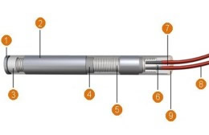
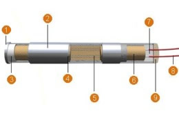
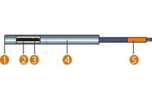
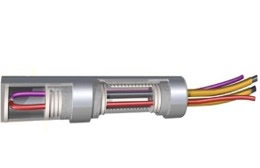

Cartuchos calefactores eléctricos de alta densidad calorífica. Son los indicados para el calentamiento de piezas sólidas y para soportar las más duras condiciones de trabajo: vibraciones, humedad, caída de líquidos, dilataciones frecuentes y donde se requieran temperaturas entre 400ºC y 750ºC ó temperaturas en un mínimo espacio. Deben ir bien ajustados al taladro en el que van introducidos. Amplio stock y fabricaciones a medida. ACABADOS DE CARTUCHOS.
Cartucho alta carga
Alta carga de watios. El hilo conductor está enrollado en espiral sobre un cuerpo cerámico duro al cual se le introduce el cable conductor sin ningún empalme (ocasionalmente se puede producir un empalme en el exterior del cartucho) se introducen discos y cabezales cerámicos con el objeto de su aislamiento y protección.
Todo ello recubierto con óxido de magnesio puro de granulometría controlada para asegurar el lleno completo del cartucho. Más tarde un proceso de compactación y otro de rectificado de la superficie hasta calibrar a la medida deseada.

1. Base soldada por Tig estanca hasta una presión 60 kg/cm2.
2. Acero inox AISI 304/ 316/321/ INCOLOY
3. Disco cerámico de aislamiento.
4. Oxido de magnesio puro de granulometría controlada.
5. Hilo calefactor Niquel-Cromo 80/20 punto de fusión 1400ºC
6. Núcleo cerámico.
7. Cabezal cerámico duro.
8. Cable conductor.
9. Pasta dura refractaria.
Cartucho baja carga
Baja carga de watios, se inserta una pieza cerámica de dureza elevada. El hilo calefactor níquel-cromo se encuentra en el interior de la pieza cerámica. Finalmente, todo se recubre con óxido de magnesio de granulometría controlada para que cubra todo el interior de la resistencia. Con esto obtenemos una perfecta conductividad entre el hilo calefactor y la masa a calentar.

1. Base soldada por Tig estanca hasta una presión 60 kg/cm2.
2. Acero inox. AISI 304/ 316/ 321
3. Disco cerámico de aislamiento.
4. Oxido de magnesio puro de granulometria controlada.
5. Hilo calefactor Nikel-Cromo 80/20 punto de fusión 1400 c.º
6. Núcleo cerámico.
7. Cabezal cerámico duro.
8. Cable conductor.
9. Pasta dura refractaria.
Microwatt
Calefactor unipolar con un hilo aislado de masa y el otro a tierra soldado en el fondo. Se puede fabricar a partir de diámetro 4, con un voltaje máximo de 48 V.

1. Base soldada por Tig estanca hasta una presión 60 kg/cm2..
2. Acero inox.304 calibrado.
3. Oxido de magnesio puro de granulometria controlada.
4. Hilo calefactor Nikel-Cromo 80/20 punto de fusión 1400ºC.
5. Cable conductor.
Cartuchos con termopar
Los cartuchos se pueden construir con sonda incorporada, en cualquier punto del cartucho a petición del cliente. Las ventajas de incorporar sondas son innumerables por ejemplo a larga la vida del cartucho considerablemente, precisión de temperatura localizada, ahorro energético, donde no se pueda alojar una sonda convencional por problemas de espacio.

Cartuchos expan
Consiste en un cartucho comprimido de alto rendimiento, con la máxima calidad en materiales, con la particularidad de ser capaz de expandirse por si solo, gracias a la forma de horquilla tensionada en un punto que le permiten la expansión y retracción del cartucho.
Las Resistencias de cartucho expansible solucionan los dos grandes problemas que tienen los cartuchos convencionales comprimidos de alta carga, la durabilidad por deficiente ajuste y la extracción por buen ajuste, mejorando la precisión térmica con cientos de acabados y terminaciones para todo tipo de industria.